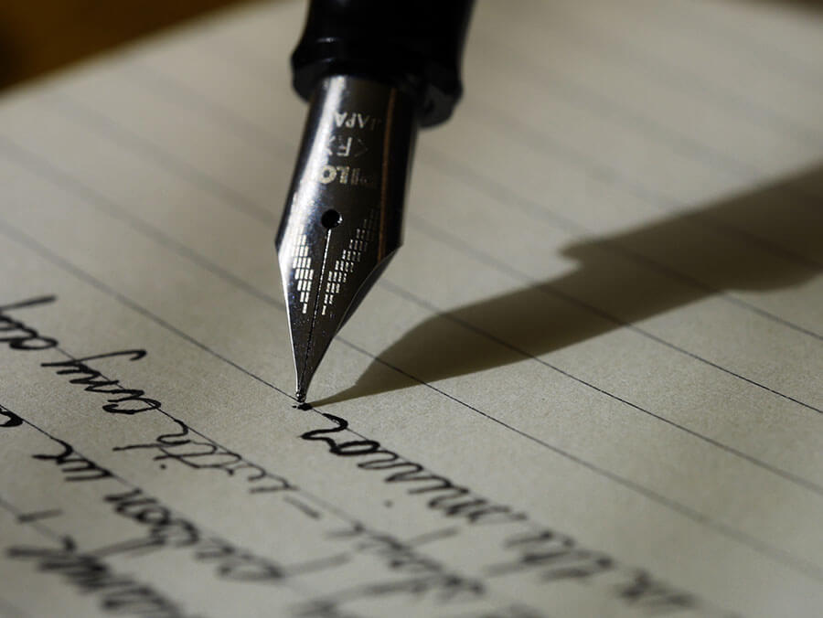

Kedoo Lightbody, a student in both the Journalism and Design program and the Fashion Design program at Parsons, spent the class talking about why he hates Photoshop and loves pens. Photoshop is too complicated, and pens are the perfect example of simplicity.
EP: So, your well designed thing was a pen. Why do you think pens are well designed?
KL: Just the fact that we don’t have to dip into a thing, like if you were gonna write something, you know, back in the day they’d have to use feathers and dip in the thing and write, we don’t have to do that today so that’s an improvement.
EP: What is your favorite pen to use?
KL: I like Sharpie, cause it’s pointy. Well, they have big ones too but I like the fine points and its really nice. I really like Sharpie. It doesn’t look good on paper if its not pointy.
EP: Doesn’t Sharpie bleed through a lot, though?
KL: I don’t think they bleed through.
EP: How often do you use pens?
KL: Like three times a week. [I use it] for classwork and if I’m writing down anything at home like on calendar or like in my notepad im always using pens.